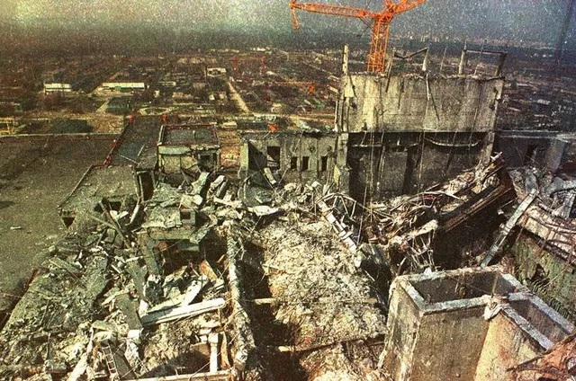

Chernobyl é uma cidade na Ucrânia, conhecida mundialmente pelo desastre nuclear ocorrido em 1986, quando o reator da usina nuclear local explodiu, causando uma devastadora contaminação radioativa e forçando a evacuação de milhares de pessoas.

Após o desastre de 1986, Chernobyl se tornou uma cidade fantasma, com a área ao redor sendo isolada devido à contaminação radioativa.